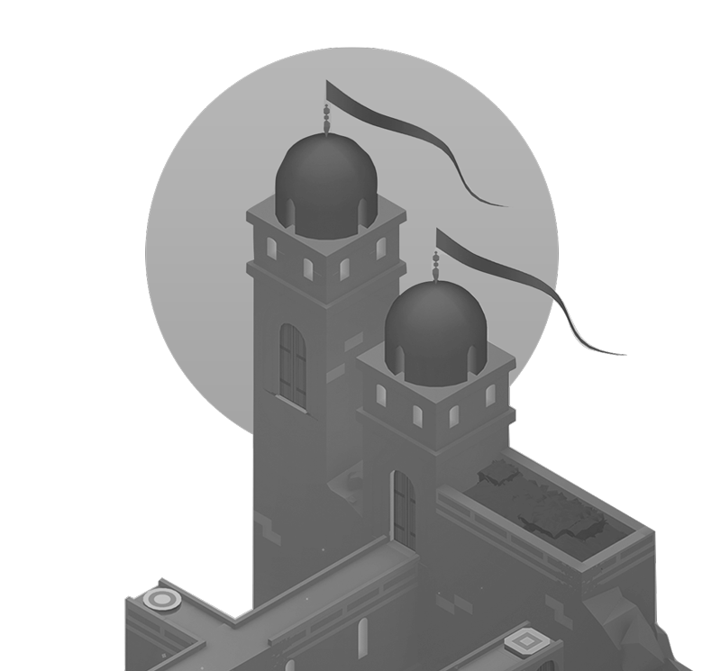
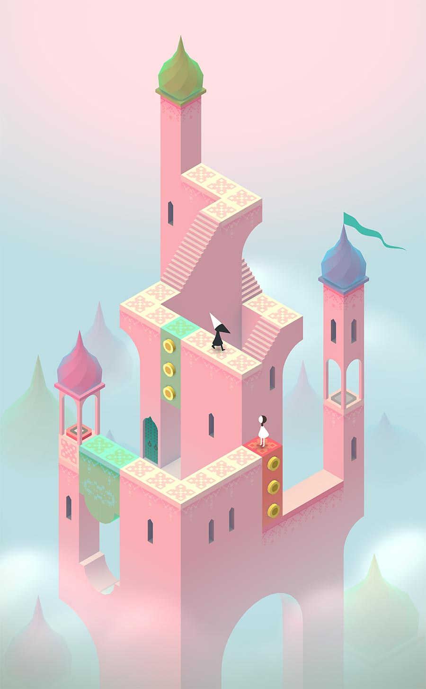
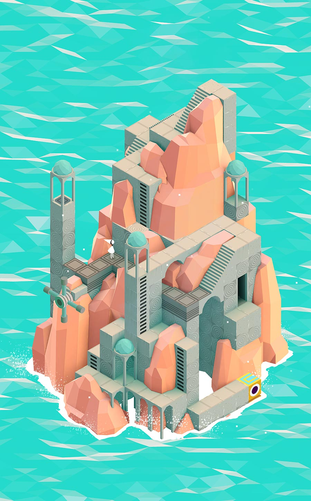

Monument Valley
⌄← Design Atlas / local studyTrailer paused · audio off
Awards

BAFTA GAMES AWARDSBEST MOBILE AND HANDHELD
2015
BAFTA GAMES AWARDSBEST BRITISH GAME
2015
GDC AWARDSINNOVATION AWARD
2015
APPLE DESIGN AWARD2014
GDC AWARDSBEST VISUAL ART
2015
UNITY AWARDSBEST 3D VISUALS
2014

MONUMENT VALLEY / PRIVATE DESIGN STUDY
Enter the impossible.
The official page lets moving scenes and still game artwork describe its world, then uses awards and press coverage as evidence.
This local text is an observation for learners. The original press section contains review quotations and media logos.
Visit the original website ↗Official game images

01 / 04 — Original game image